Prompt Life v0.28.1 Visual Aid Readiness Report
Generated 2026-06-13T18:48:56.795Z for Prompt Life v0.28.1.
This readiness pass reclassifies all Journey visual aids against a human-readability rubric, applies the six-template strategy, and verifies that no P0/P1 visual remains for small human testing.
39visual aids scored
18P0/P1 before
0P0/P1 after
6templates used
Overflow Audit
pass: checked 39 visual aids at 320px and 390px. Issues found: 0.
Summary Of Changes
- Added six canonical visual-aid templates to the style guide.
- Scored all 39 Journey visual aids with a seven-part human-readability rubric.
- Created a full all-visuals review packet and tester feedback sheet.
- Strengthened
audit:visual-aidsto check templates, captions, alt text, label estimates, generated/mechanism boundaries, P0/P1 status, metadata strings, and screenshot coverage. - Bumped app/package version to 0.28.1.
P0/P1 Before And After
| Priority | Before | After |
|---|---|---|
| P0 | 0 | 0 |
| P1 | 18 | 0 |
| P2 | 8 | 7 |
| P3 | 13 | 32 |
Template Distribution
- Atmospheric Scene: 3
- Taxonomy Map: 11
- Comparison Board: 9
- Mechanism Flow: 9
- Probability Bars: 3
- Context Tray / Stack: 4
Visuals Fixed For Testing
- Fine-Tuning Path
- Prompt vs Response
- Text to Tokens
- Relevance Between Tokens
- MLP Feature Workshop
- Transformer Stack
- Hidden State Flow
- Raw Scoreboard
- Score to Probability
- Weighted Token Choice
- Learning Modes Matrix
- Media Lane Map
- Storm Front
- Borrowed Flames
- Cost Ledger
- Benefit Tiers
- Accountability Flow
- Better-AI Control Panel
- Full Chain Map
Temporary But Acceptable For Testing
- Overfitting vs Generalization
- Feature Vector
- Tensor Block
Recommended Later Image 2 Replacements
- Prompt to Prediction
- Broad Pretraining
- Alignment Landscape
- Borrowed Flames
- Cost Ledger
- Benefit Tiers
- Accountability Flow
Must Remain Coded SVG/HTML
- AI Family Tree
- Rules and Learned Patterns
- Training Loop
- Overfitting vs Generalization
- Fine-Tuning Path
- Forward Pass
- Prompt vs Response
- Text to Tokens
- Token IDs
- Embedding Lookup
- Feature Vector
- Tensor Block
- Relevance Between Tokens
- MLP Feature Workshop
- Transformer Stack
- Hidden State Flow
- Raw Scoreboard
- Score to Probability
- Weighted Token Choice
- Append and Repeat
- Temporary Context Window
- Open-Book Retrieval
- Claim Support Map
- Unsupported Bridge
- Learning Modes Matrix
- Append Or Denoise
- Media Lane Map
- Storm Front
- Risk Ledger
- Better-AI Control Panel
- Context Tray
- Full Chain Map
Screenshots
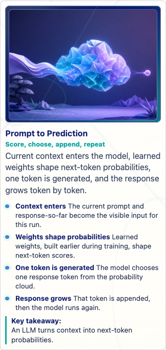
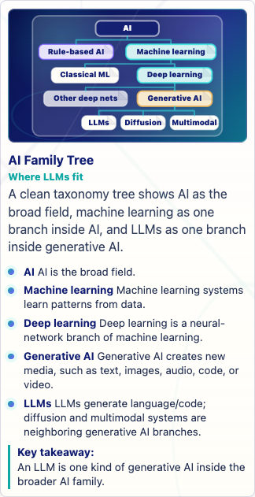
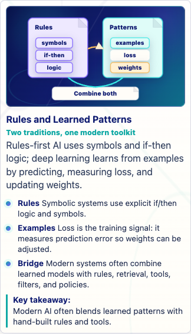
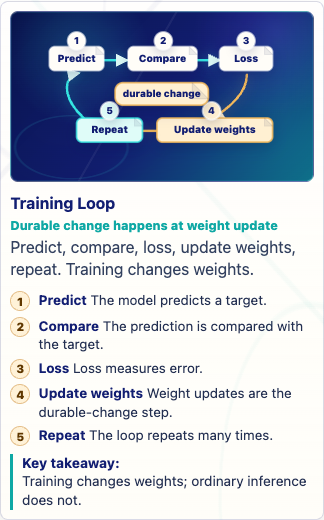
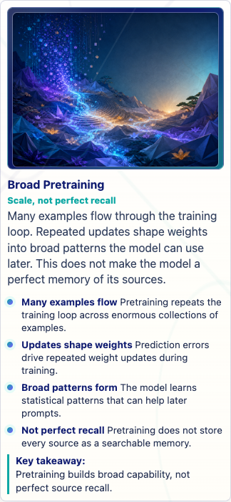
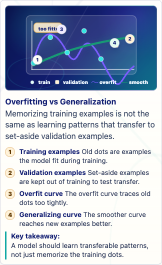
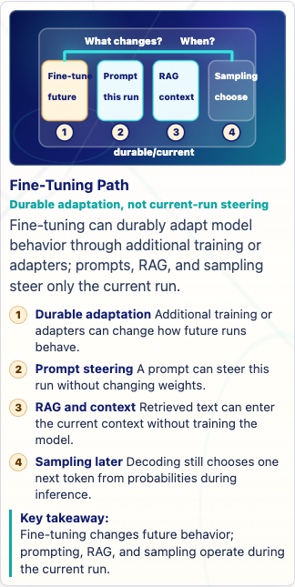
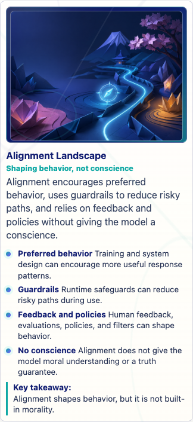
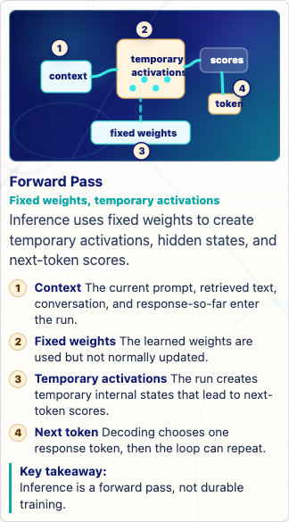
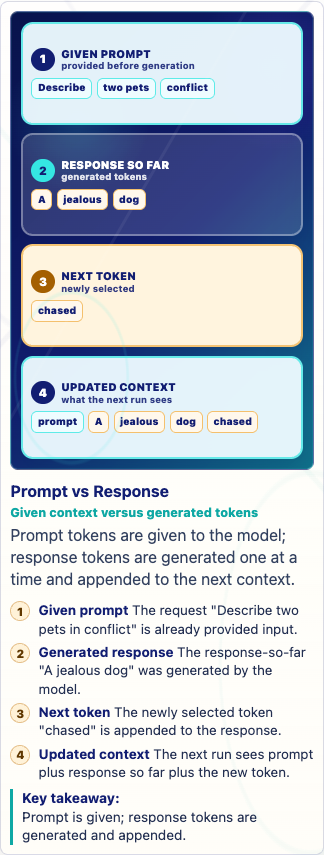
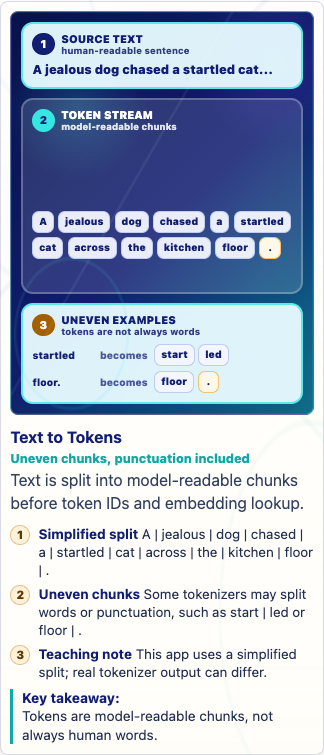
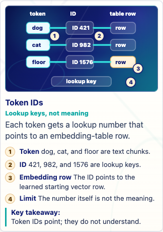
Human Testing Recommendation
ready for small human testing. No P0/P1 visual remains after the readiness classification. Several visuals remain intentionally temporary and should be watched closely during testing.